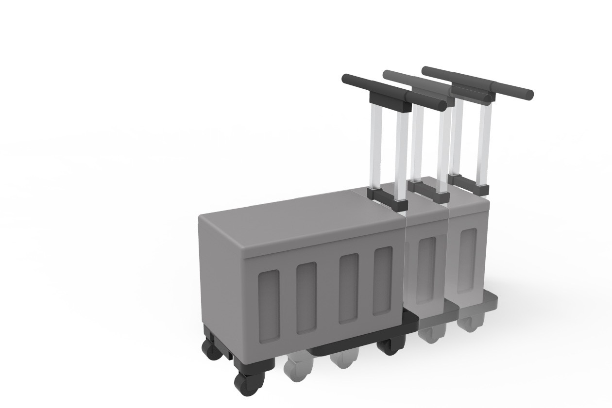
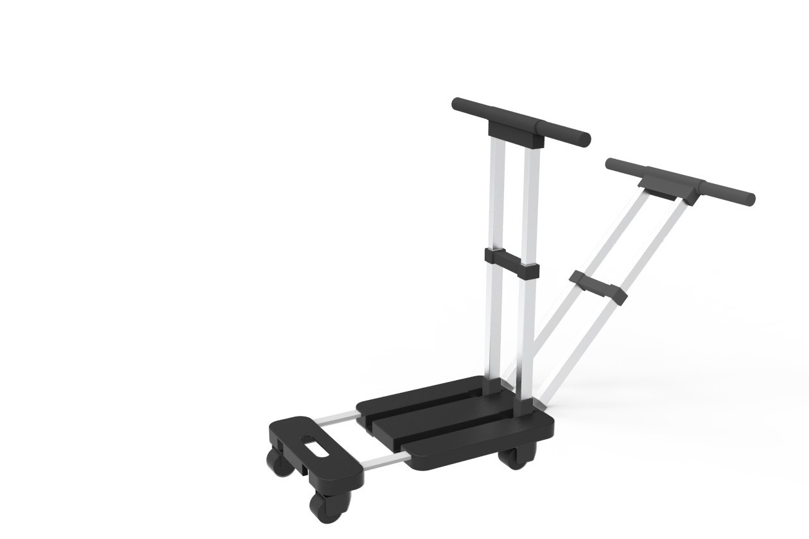

Prototype
實機原型


在農業、工地與市集，推車仍高度依賴人力。當載重增加、地面不佳、長時間反覆搬運時，使用者需要持續施加大量推力，導致體力快速消耗，甚至造成腰部、肩膀與手腕的職業傷害。市面上的電動／自走式設備又多半昂貴、笨重、操作複雜，難以普及於中小型工作場域。我們選擇回到搬運工具的核心需求——「推得動、推得久」，用最單純的方式解決最實際的問題。
聚焦提供穩定的馬達推力，不堆砌多段模式或感測系統，把可靠度與耐用度留給最重要的事。
完整保留傳統推車的操作方式，無需學習與訓練，推就對了。
無複雜模式，適合長時間戶外使用，維護成本低。
農地、工地、市集等不平整地面皆可勝任，兼顧省力與穩定。
伸縮式把手可調整高度，適應不同身形與使用情境；簡潔的車架與置物箱結構，兼顧承載與耐用。


| 比較項目 | 全電動／自走式 | 多功能電輔推車 | 地野省力車 |
|---|---|---|---|
| 操作門檻 | 高，需訓練 | 中，模式多 | 低，直覺上手 |
| 結構與維護 | 複雜、體積大 | 較複雜 | 簡單、耐用、好維護 |
| 價格門檻 | 高 | 中高 | 親民、聚焦核心 |
短時間多次推動滿載推車，場地多變，重視直覺操作與穩定性。
年長者或體力較弱者，重載時容易疲勞，需要穩定的省力支援。
不平整地面反覆搬運、工作時間長、負重高，對省力需求明確、排斥複雜操作。
國立臺北商業大學・創意科技與產品設計系